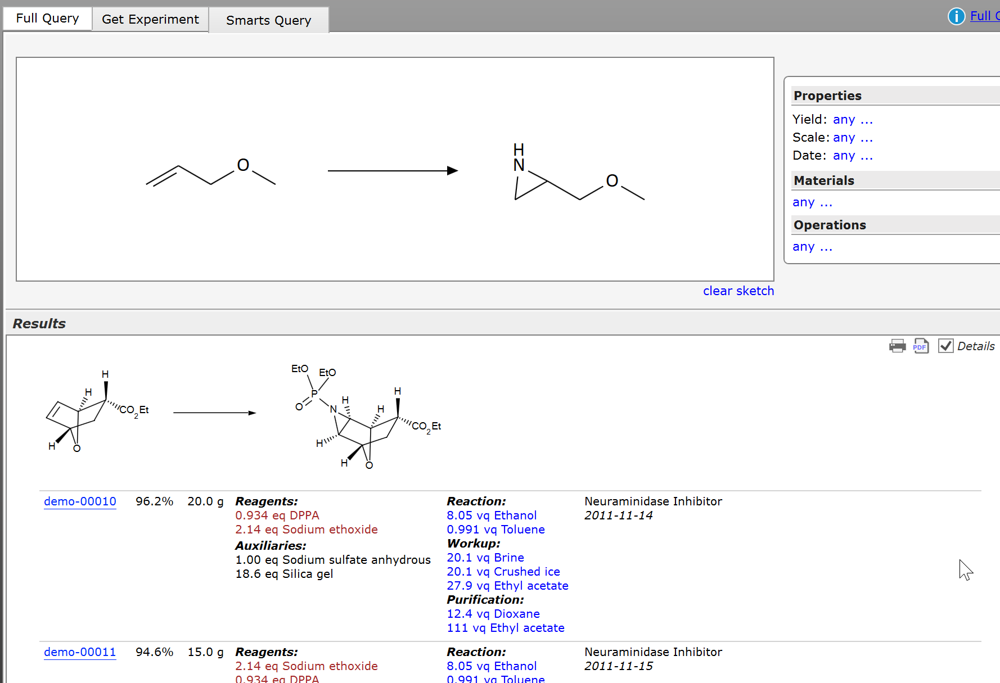
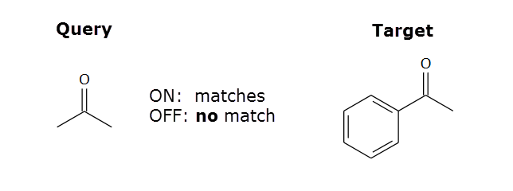
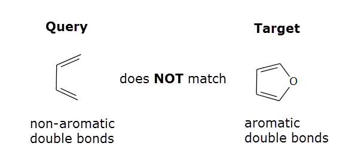

Reaction Substructure Search
What is a Reaction Substructure Search (RSS)?
A reaction substructure search (RSS) screens a reaction database for a specific chemical conversion by querying its stored reaction sketches.
Here's a typical use case for performing an RSS query: Assume you plan to convert a specific allyl ether to an aziridine, and you would like to learn about the conditions applied in the past for similar reactions, to take advantage of existing knowledge. The resulting query is illustrated in the image below: The query sketch in the upper part selectively contains the reactant and product structure parts considered relevant to the desired conversion, including possible substituents around the reaction center(s). In the lower part, the first of several result groups is visible, its reaction sketch containing the query substructures as part of its reactant and product structures:

RSS Query Sketch
In Espresso ELN, a substructure query sketch can consist of any number of reactants (where the leftmost is the reference reactant), but only the leftmost product is considered for the search. You can draw more than one product, but all additional ones are ignored. No atom mapping is required, and reaction centers don't need to be marked, as in many other applications. For technical reasons, additional reactants are required to be ungrouped (e.g. no salts).
The queries are not limited to full reactions: Also substructure queries for reactants only and products only are possible, where the reaction role is specified by the substructure position before or after the reaction arrow:
|
Full RSS query: |
Reactant(s) only RSS query: |
Product only RSS query: |
|
A (+ B + ..) ---> D |
A (+ B + ..) ---> |
--- > A |
RSS Options (Toolbar)
- Implicit H: If checked, all query heteroatoms are assigned implicit hydrogens. Thus, C-O is treated as C-OH, and C-N is treated as C-NH2, etc. The default is unchecked. If unchecked, even e.g. C-OH is treated as C-O, but C-O-H is left as is.
- Extended Arom.: If checked, aliphatic query centers are allowed to be an attachment point to an aromatic system to produce a match. If unchecked, only aliphatic matches are found. The illustration below shows the effect of this parameter being switched on/off:

Note that queries with non-aromatic double-bonds never match aromatic targets, even if above option is checked:
